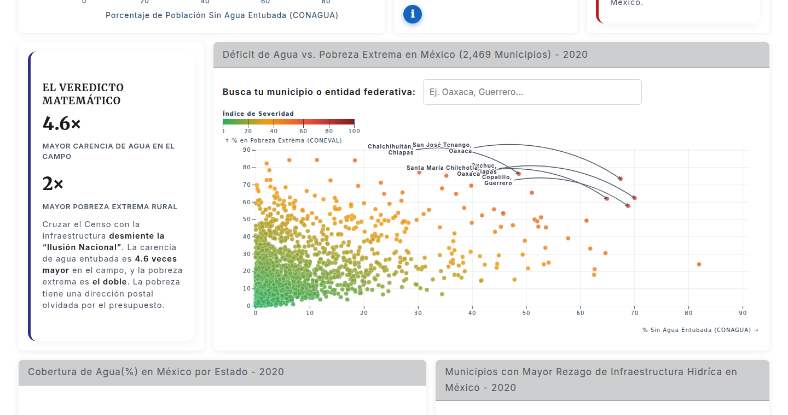

Data engineering · HackODS UNAM · 1er lugar
HackODS
Cinco fuentes públicas. Una pregunta que ninguna respondía por separado.

Los datos existen. El problema es que viven separados.
Los datos necesarios para estudiar la relación entre infraestructura hídrica y pobreza municipal existen, pero están repartidos entre instituciones, formatos y niveles de granularidad distintos. Consultarlos por separado oculta los patrones que aparecen al cruzarlos.
Un pipeline reproducible, no una consulta manual.
Construimos un pipeline ETL en Python para extraer, limpiar y armonizar datos de cinco dependencias. Un dashboard interactivo en Quarto permite recorrer los resultados por municipio y explorar relaciones sin presentar una correlación como causalidad.
Formatos y granularidades distintas. Ninguna responde la pregunta sola.
Entorno reproducible con uv: se ejecuta y se verifica como una unidad.
Indicadores, dispersión municipal, mapa de cobertura y ranking de rezago en una sola lectura.

Conecté las fuentes, el procesamiento y la visualización en un solo flujo.
Lideré la arquitectura de la solución junto con el equipo linuxitOS y estructuré el entorno reproducible con uv. Mi trabajo conectó las fuentes, el procesamiento y la capa de visualización en un flujo que podía ejecutarse y verificarse como una unidad.
Primer lugar en HackODS UNAM 2026.
El premio valida la capacidad del equipo para transformar datos abiertos fragmentados en una herramienta legible y técnicamente reproducible.


HackODS UNAM · 2026
Ver el proyecto
El dashboard es público.
Apéndice · Patrón de página de caso
Una plantilla, cuatro casos
HackODS es el ejemplo. Duet, World Cup y Hello World usan la misma estructura con su propio contenido.
01 · Arquitectura de información
Los ocho bloques de ARCHITECTURE.md §7.2, en orden, sin excepción. Un caso se lee en tres a cinco minutos: no es un diario de desarrollo ni una copia del README.
02 · Qué cambia y qué no
Fijo en los cuatro casos
Header con «Volver a proyectos» en lugar de la nav de la home. Encabezados de sección como etiqueta mono + regla, sin numeración / 08: eso pertenece al scrollytelling y aquí confundiría. Barra de datos de cinco celdas. Marcos #17181B con chrome de 1px. Mismos tokens, misma escala.
Variable por caso
La atmósfera del bloque 3–4: HackODS usa #080D17 porque es territorio y dato. Duet y Hello World deberían tomar otro tono del set y sostenerlo igual: dos colores de fondo por página, no más. El diagrama de tres módulos también cambia: en Duet es orquestador → worker → revisión; en Hello World, superficie pública → portal → admin.
Imágenes
Cuatro por caso como máximo, cada una con un trabajo distinto: dominante, sistema, resultado, evidencia humana. aspect-ratio exacto del archivo — aquí 1440/900, 1440/760, 1440/1050 y 4/3. Sin fondo full-bleed, igual que en la home.
Motion
Mucho más contenido que la home. ARCHITECTURE.md §11 dice que las páginas de caso reutilizan helpers de entrada sin cargar el controlador del scrollytelling: sin scrub, sin parallax, solo entradas y la barra de progreso. Un caso se lee, no se recorre.